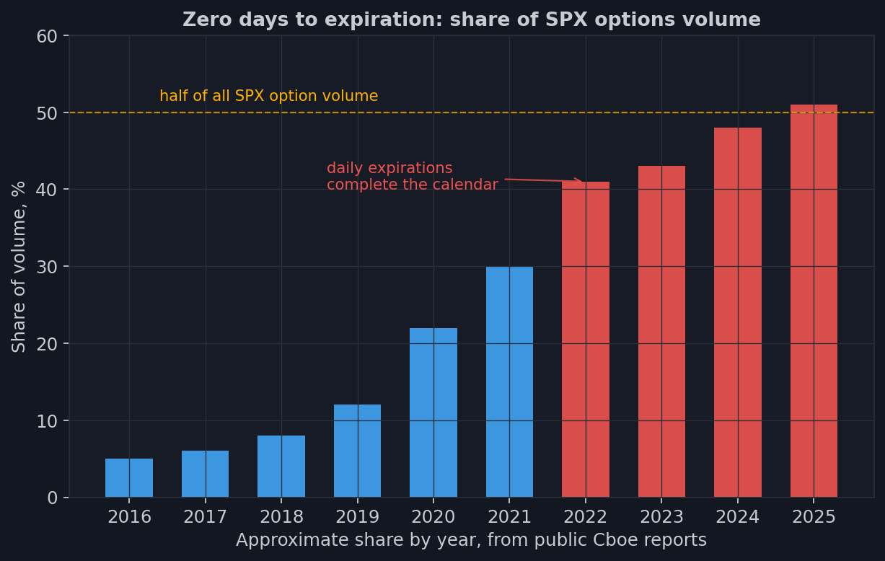
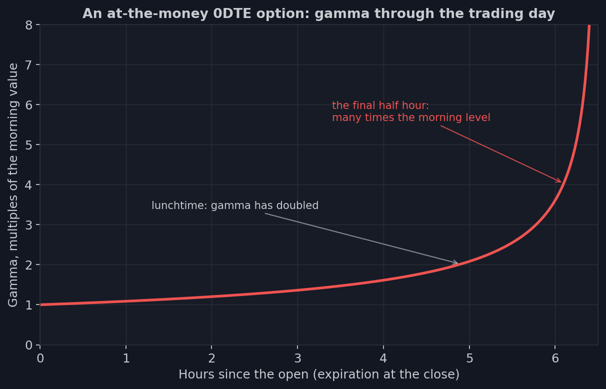

7. 0DTE: el mercado que rompió el calendario
En la lección 3 estudiamos la curva roja — la delta de una opción en las últimas
horas de su vida, saltando de cero a uno en un par de puntos — y prometimos volver
a ella. Hora de cumplir. Porque en pocos años esa curva pasó de curiosidad exótica
a trama principal del mayor mercado de opciones del planeta: hoy, aproximadamente
uno de cada dos contratos SPX vive menos de un día de negociación.
Esas opciones se llaman 0DTE — zero days to expiration: compradas por la
mañana, vencidas para la tarde. No es un tipo nuevo de contrato — son las mismas
opciones SPX de la lección 2, solo que tomadas con la fecha más cercana: la de
hoy. Lo nuevo era otra cosa: para que exista una fecha «hoy» todos los días, la
bolsa tuvo que cerrar el ciclo del calendario.
Cómo se cerró el calendario
El camino llevó diecisiete años. Hasta 2005, las opciones SPX vivían a ritmo
mensual — un vencimiento, el tercer viernes. Luego la Cboe añadió series
semanales, y los vencimientos se volvieron asunto de viernes. En 2016, los lunes y
miércoles se sumaron a los viernes. Y en la primavera de 2022 — los martes y
jueves, y el calendario quedó sellado: desde ese momento, cada día de negociación
vence alguna serie del SPX. Cada día el mercado tiene una opción viviendo sus
últimas horas — y el vencimiento de «hoy» siempre se puede operar.
La respuesta del mercado superó todas las expectativas de la bolsa.

La cuota de las opciones del mismo día en el volumen del SPX llevaba años
creciendo, pero tras cerrarse el calendario en 2022 saltó a una nueva meseta — y
siguió escalando hasta chocar con una marca psicológica: cerca de la mitad de
todo el volumen de opciones del SPX vive hoy menos de un día. Fíjate de qué es
cuota: del mayor mercado de opciones del mundo, aquel cuyos billones de nominal
medimos en la lección 1. La mitad de eso son ahora opciones del mismo día.
Quién opera esto y por qué
Medio día de vida — ¿qué se puede hacer con eso? En la práctica, el 0DTE encontró
compradores y vendedores para todos los gustos, y vale la pena conocer sus
motivos: son los futuros «personajes» de nuestros datos.
Seguro de precisión. El gestor de carteras de la lección 1 ya no tiene que
pagar un mes de protección cuando lo único que le asusta es la reunión de la Fed
de hoy. Compra puts para el día — un seguro contra exactamente el evento que teme.
Y barato: la theta se ha comido todo menos el último día, y no se paga por tiempo
que no se necesita.
Apuestas a eventos. El dato de inflación a las 8:30, la decisión de tipos a
las 14:00 — una opción del mismo día permite jugar el desenlace de un evento
concreto con el apalancamiento que calculamos en la lección 1, solo que más
afilado: las primas son centavos, los strikes están cerca.
Cosechar theta a todo gas. Los vendedores de prima recuerdan de la lección 3:
los últimos días arden más rápido. Una opción del mismo día no es más que el
último día — decaimiento destilado. La venta sistemática de 0DTE se convirtió en
una industria — con todos los riesgos de una aseguradora comprimidos en seis horas
y media.
La lotería. Un call comprado por un dólar que para la tarde vale cero o diez
es el boleto de lotería más accesible de los mercados financieros. El retail se
enamoró primero.
La física de la opción de un día: todo lo que sabemos, pero en horas
Conectemos esto con la mecánica de la primera parte del curso. Toda la vida de una
opción — el nacimiento del valor temporal, su decaimiento, el afilado de la gamma,
la deriva de la delta — que un contrato mensual estira a lo largo de semanas, una
0DTE la comprime en un solo día de negociación. Cada efecto que antes dibujábamos
«por días» ahora ocurre «por horas».

Aquí está la gamma de una opción cercana al dinero a lo largo de su único día.
Para mediodía es el doble que por la mañana. En la última hora — varias veces
mayor. La curva roja de delta de la lección 3 — «de cero a uno en un par de
puntos» — es el retrato de toda opción 0DTE después de comer. Y ahora recuerda de
quién depende la vida con la gamma: el MM, obligado a mantener el cero, cubre esta
avalancha continuamente, y su ajetreo de la lección 4 queda igualmente comprimido
en horas y acelera hacia el cierre.
De ahí la nueva entonación del mercado. El clima de gamma, que antes cambiaba de
semana en semana, ahora cambia varias veces al día: una marea matinal de compras
de puts 0DTE puede volcar a los MM a gamma corta para el mediodía, y la toma de
beneficios de la tarde puede devolverlos para la noche. Los pins a los strikes
grandes se han vuelto un fenómeno intradía: un nivel al que el mercado se «pega»
desde las 14:00 quizá no existía a las 10:00 — lo crearon posiciones abiertas a
mediodía. El signo y la fuerza del libro del MM corren con el horario de un solo
día.
Y un último trazo: esta máquina rota su capital a velocidad inaudita. Los mismos
mil dólares pueden participar en cinco «mercados» distintos en una semana — uno
por día. La rotación crece, las posiciones se multiplican, y para la tarde de cada
día todo se evapora sin dejar rastro: el vencimiento limpia la mesa a cero, y
mañana el juego se arma de nuevo.
Detente un segundo en las palabras «sin dejar rastro» — en ellas vive toda la
intriga. La mitad del mercado nace y muere dentro de un solo día. Y nuestra fuente
principal de datos — recuerda la lección 5 — fotografía las posiciones una vez al
día, por la tarde. ¿Qué quedará en esa fotografía? La próxima lección es corta y
desagradable: haremos la cuenta de exactamente lo que no podemos ver.
- 0DTE es una opción SPX corriente que vence hoy: toda la vida de una opción comprimida en un día de negociación.
- En la primavera de 2022 la bolsa cerró el calendario (un vencimiento cada día) - y la cuota 0DTE creció hasta cerca de la mitad del volumen del SPX.
- Los participantes: seguro de precisión, apuestas a eventos, venta de la theta más rápida y compras de lotería.
- La gamma de una opción de un día crece varias veces hacia el cierre - el clima de gamma del mercado cambia ahora varias veces al día.